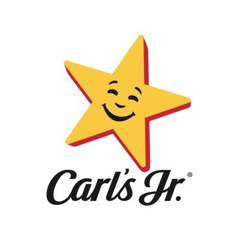
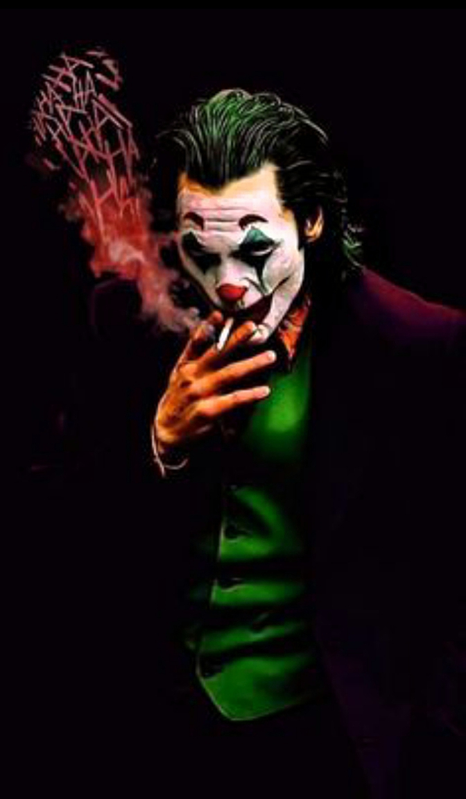

<ion-header [translucent]="true">
  <ion-toolbar>
    <div id="header">
      <ion-icon name="chevron-back-outline" id="flechita-atras" (click)="Home()"></ion-icon>
      <h3>Vote por un restaurante</h3>
    </div>
  </ion-toolbar>
</ion-header>

<ion-content class="fondo">
 
  <div id="container">
    <div class="opciones-votacion">
      <div class="opcion">
          
          <ion-radio slot="start" value="griff"></ion-radio>
      </div>
      <div class="opcion">
          
          <ion-radio slot="start" value="griff"></ion-radio>      
      </div>
      <div class="opcion">
          
          <ion-radio slot="start" value="griff"></ion-radio>      
      </div>
    </div>

    <ion-button color="primary" size="large" (click)="AbreGanador()">Votar</ion-button>

  </div>

</ion-content>

<ion-footer [translucent]="true">
  <ion-toolbar>
    <div id="footer">
      <div class="footer-usuarios">
      
      
      
      
      
    </div>
    <h3>20s</h3>
    </div>
  </ion-toolbar>
</ion-footer>

